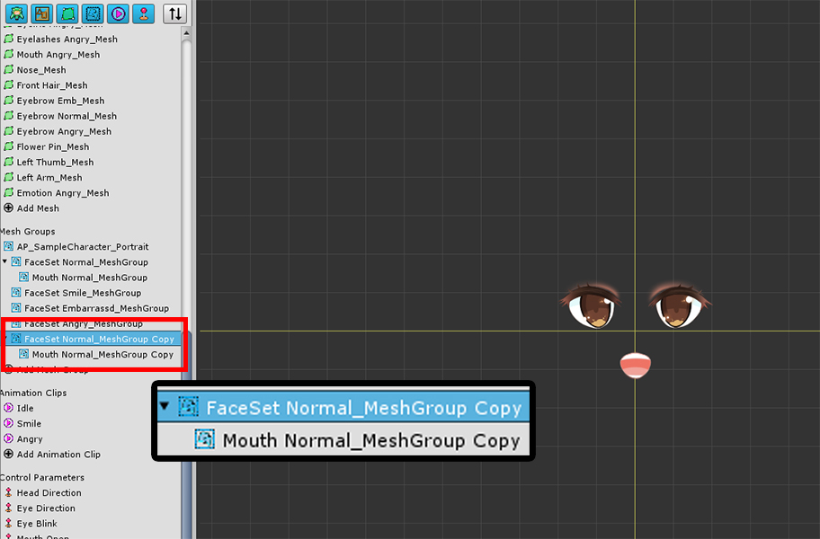
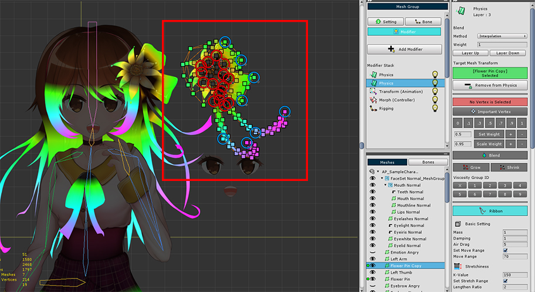
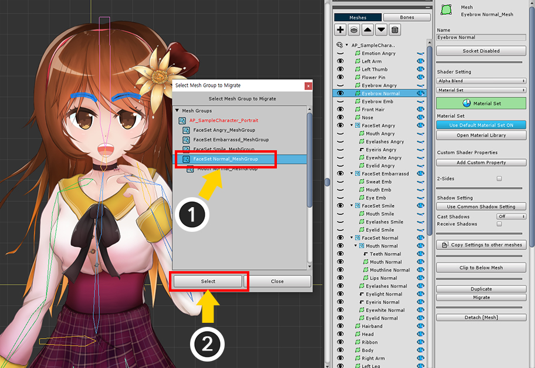
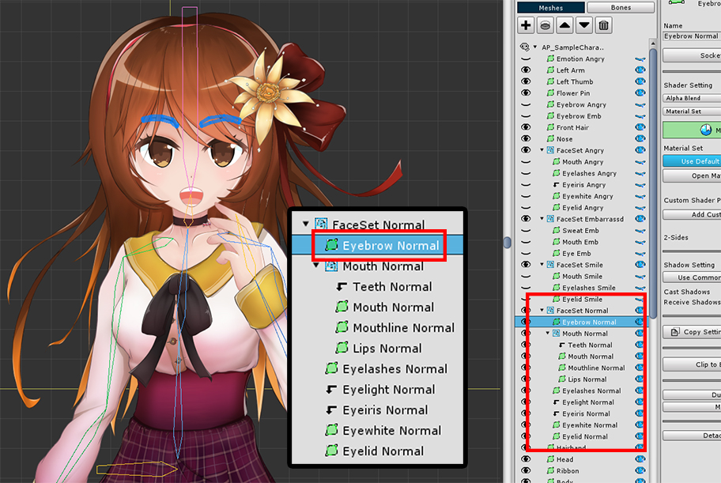
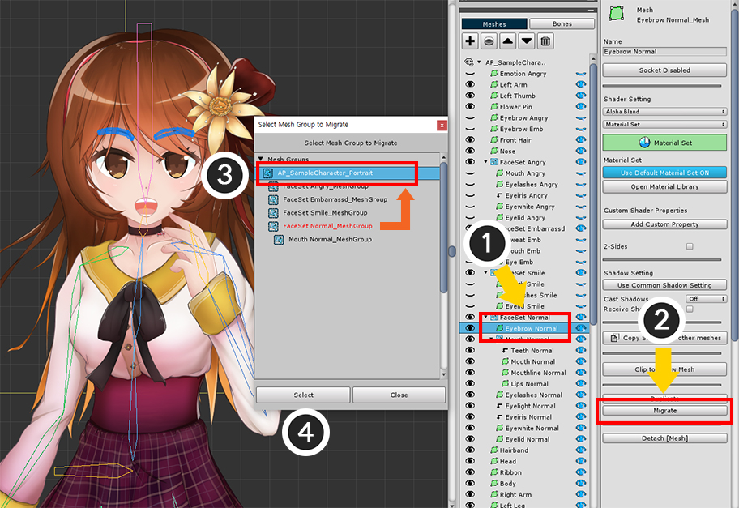
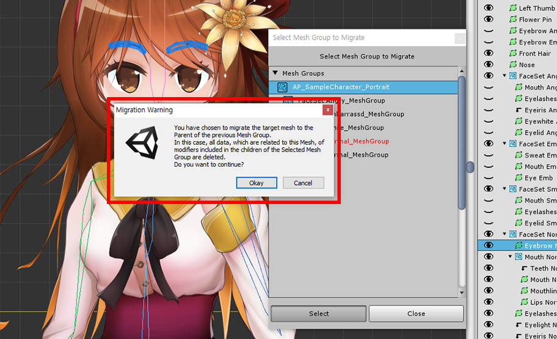
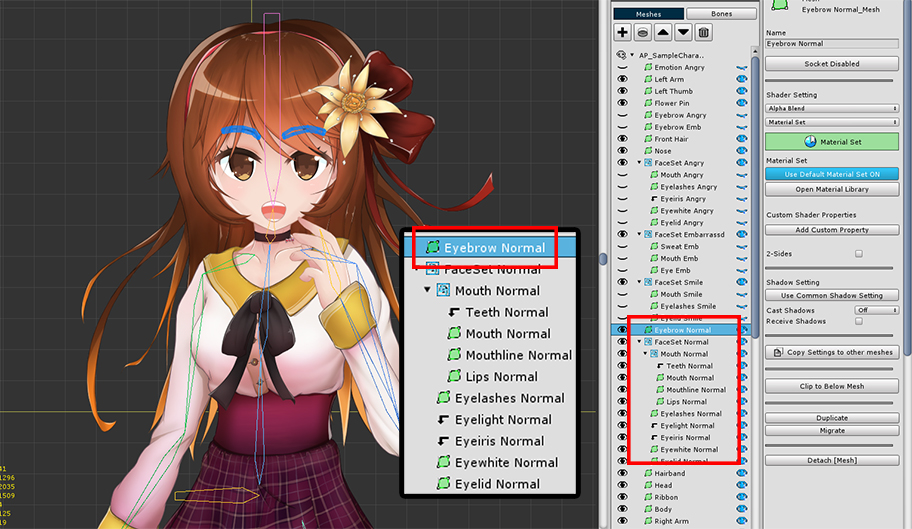

AnyPortrait > Manual > Duplicating / Migrating Sub-Objects
Duplicating / Migrating Sub-Objects
1.2.2
Duplicate a child Mesh / Mesh Group

(1) Select the Setting tab.
(2) Select the Child Mesh to duplicate.
(3) Press the Duplicate button.

The child mesh is duplicated.
You can duplicate a Child Mesh Group in the same way.

(1) Select the Child Mesh Group to duplicate.
(2) Press the Duplicate button.

The Child Mesh Group is duplicated.
You can see that all objects in that mesh group are duplicated together.

Since Mesh Groups cannot belong to more than one parent, the duplicated Child Mesh Group is created as separate mesh group.

The Modifiers of the duplicated child meshes or mesh groups are also duplicated, so they works the same with the source.
If these objects are registered as Timeline Layers of Animation clips, those timeline layers are also duplicated.
Migrate a child Mesh
You may need to migrate child meshes to a higher mesh group than the existing one, or vice versa.
You can change the parent of the mesh by following the instructions below.

(1) Select the child Mesh.
(2) Press the Migrate button.

Now that the mesh is in the Root Mesh Group, let's change it to belong to the "Child Mesh Group".
(1) Select the Child Mesh Group to be the target.
(2) Press the Select button.

The mesh is migrated to the child mesh group than before.

This step, on the contrary, let's move it to the mesh group that is higher than before.
The method is the same.
(1) Select the Mesh.
(2) Press the Migrate button.
(3) Select the Parent Mesh Group higher than before.
(4) Press the Select button.

But this time a warning message appears.
This is a guide to the problem that may occurs depending on the structure of the mesh group and the scope of the modifier.
Modifiers target "Child objects of mesh groups and their child mesh groups (meshes, mesh groups, bones)".
Conversely, it cannot be applied to "Objects belonging to parent mesh group and parent mesh group".
This is due to the system having a limited amount of information about the parent while the mesh group has information about its children.
For this reason, when a Mesh migrates to a Child Mesh Group, there is no problem because the modifier can recognize the mesh.
Conversely, when a Mesh migrates to a Parent Mesh Group, existing data is deleted because the modifiers in the original mesh group do not recognize the mesh.
If you add a modifier only to the "Root Mesh Group", you can ignore this message.
Note, however, that modifiers may be added to a "Child Mesh Group" that may result in data being deleted.
Read the message and press the OK button if there are no problems.

The mesh is migrated to the parent mesh group.